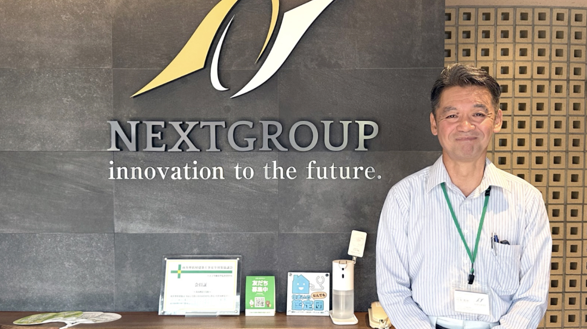
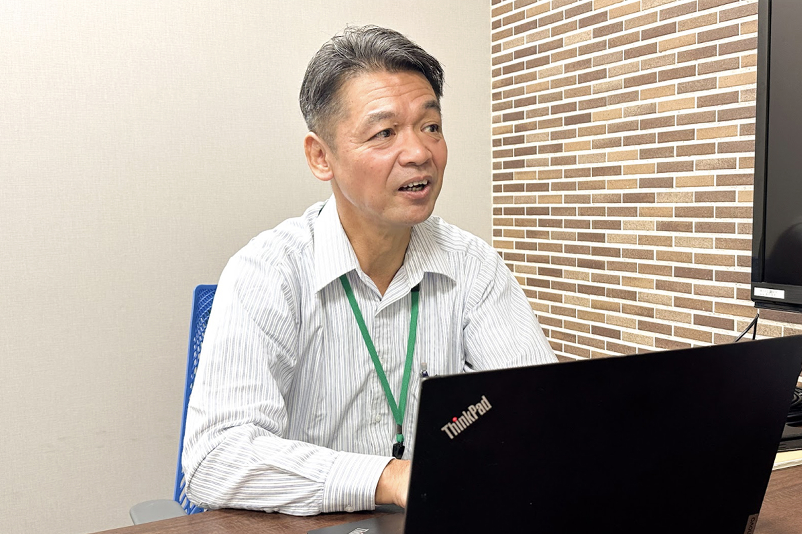
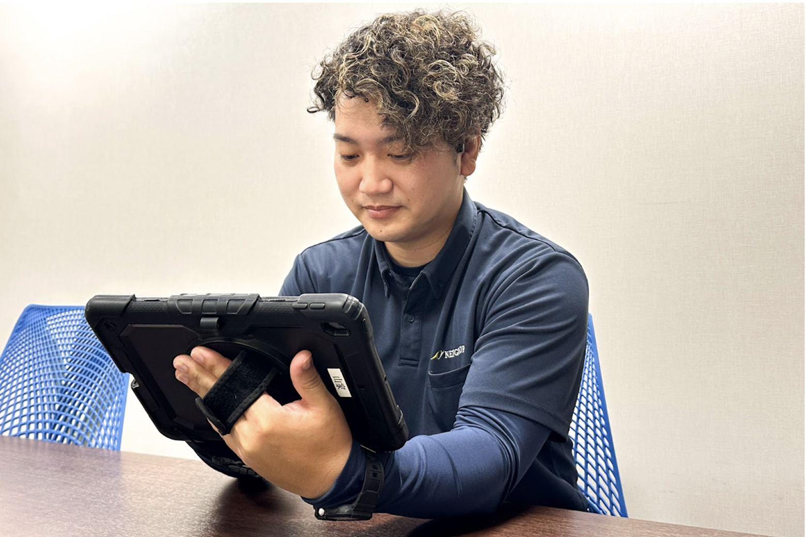
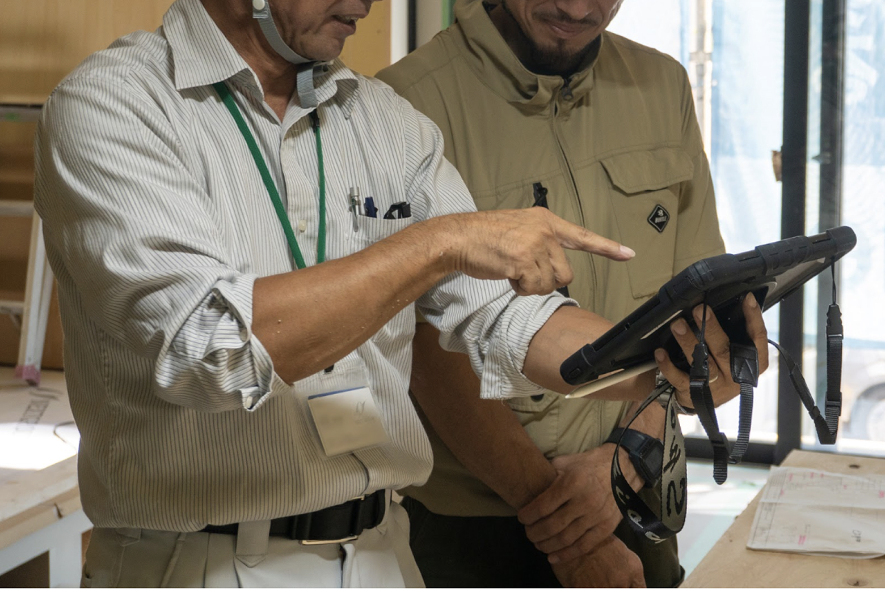
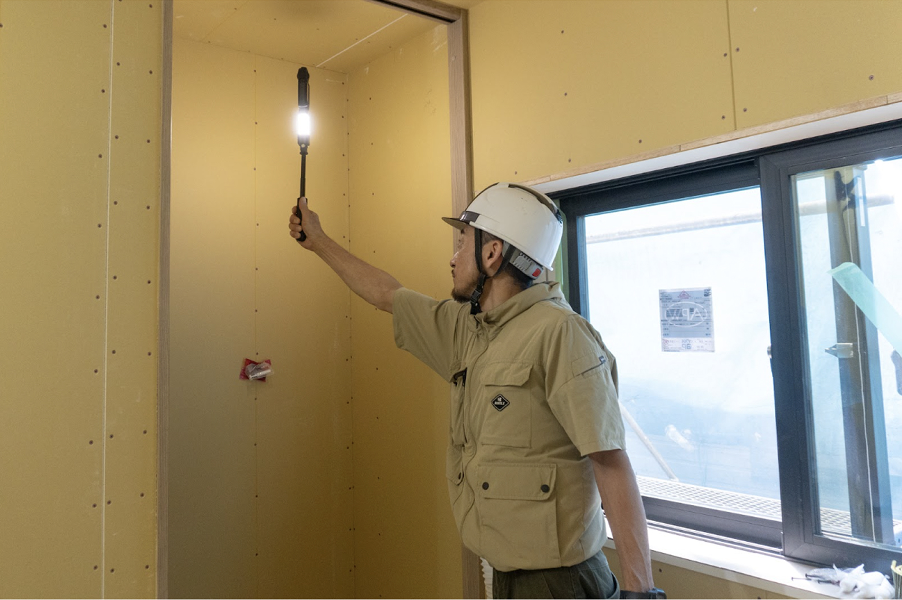
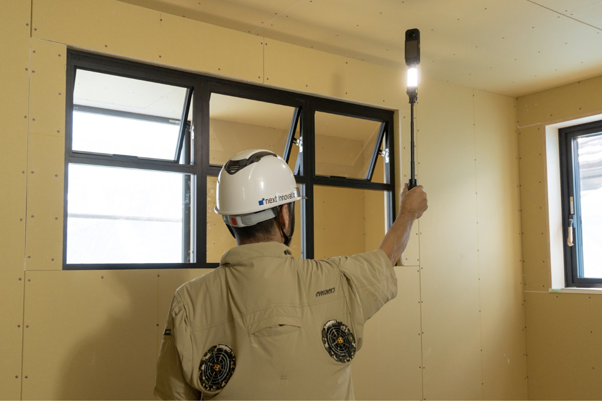

現場巡回の最適化で、移動時間を大きく削減。多拠点導入のカギは「誰でも使える」インターフェース
ネクストイノベーション株式会社
目次

課題
- 複数現場を担当する監督の移動時間が他業務を圧迫
- 既存の撮影ツールは操作が煩雑で、現場での統一活用が難航
- 高度化する施主要望が若手監督の心理的負担となり、定着や採用の障壁に
効果
- 現場巡回の頻度が減り、交通状況の読みづらい首都圏を中心に移動時間を削減
- シンプルな操作性で、撮影者を選ばず現場の記録を確実に残せるように
- 関係部門で現場状況を共有し、品質向上と心理的プレッシャー軽減を両立
導入背景
担当現場の増加が労働時間を圧迫、若手監督の心理的プレッシャーにも
ネクストイノベーションは「幸せ創造のイノベーション企業でありつづける」を企業理念として、不動産売買仲介や戸建て住宅の新築・増改築事業に取り組んでいます。住宅事業では首都圏や愛知を中心に全国で地域密着型の営業体制を構築し、現在はグループ全体で年間300棟を手がけるまでに成長。他社に先駆けたCADセンターの海外設置や、iPadの国内発売翌日には現場で活用するなど、新技術の導入にも積極的に取り組み、業務効率化や売上拡大を実現しています。
こうした成長の過程で、複数物件を担当する現場監督の移動が増え、非効率な移動時間が他業務を圧迫することが課題となっていました。また、高度化するお施主様からの要望に対応する中で、特に若手の現場監督には大きなプレッシャーがかかり、採用や定着も課題視されています。グループの成長に伴い、現場監督の業務効率化と働きやすい環境づくりが急務となっていました。
導入効果
誰でも確実に現場を記録できる安心感
これらの課題を解決するため、現場を360度カメラで可視化し、遠隔で状況を確認できる「zenshot」が試験導入されました。棟数の増加に伴い新たな現場スタッフが増える中でも、誰でも手軽に撮影できる点が決め手となり、全国3拠点での本格導入に至りました。

ネクストイノベーション株式会社 専務取締役 川名 真治 様川名様: これまでも現場の可視化ツールを試してきましたが、他社製品は撮影作業が煩雑で、職人に任せきれないことがネックでした。数十棟規模なら直接コミュニケーションを取ればやり繰りできますが、100棟を超えると、現場監督の手を離れても確実に撮影・記録できるツールでなければ意味がありません。その点、zenshotは誰でも簡単に撮影でき、現場監督が安心して任せられることが大きなメリットでした。他社で感じていた不満点がすべて解消されており、期待通りの効果を実感したため、全拠点への導入を決めました。
導入後の効果
現場確認フローを効率化し、移動時間を削減
現場の様子を遠隔から確認できるようになったことで、確認のためだけに現場へ足を運ぶ回数を削減できました。特に交通状況による時間変動が大きい東京エリアでは、担当監督が現場に向かう回数を減らすことが労働時間の短縮に直結し、大きな成果につながっています。
また、お施主様からの急な問い合わせに対しても、zenshotで記録された画像を活用することで、明確かつ迅速に回答できるようになり、顧客満足度の向上にも寄与しています。
さらに、現場監督だけでなく設計や営業、管理職も状況を共有できるようになり、複数人で確認・対応できる体制が整いました。これにより、監督個人の業務負担軽減や、品質向上の効果も期待されています。

現場監督 主任 山家 由大 様山家様:現場の様子を遠隔から確認できるようになったことで、確認のためだけに現場へ足を運ぶ回数を削減できました。特に交通状況による時間変動が大きい東京エリアでは、担当監督が現場に向かう回数を減らすことが労働時間の短縮に直結し、大きな成果につながっています。また、お施主様からの急な問い合わせに対しても、zenshotで記録された画像を活用することで、明確かつ迅速に回答できるようになり、顧客満足度の向上にも寄与しています。
さらに、現場監督だけでなく設計や営業、管理職も状況を共有できるようになり、複数人で確認・対応できる体制が整いました。これにより、監督個人の業務負担軽減や、品質向上の効果も期待されています。
今後の展望
複数拠点をツールで繋ぎ、建設業の働きやすさを推進
zenshotの導入により、拠点を越えて現場状況を共有できるようになったことで、施工の標準化や安全対策の徹底に活用できる可能性も見え始めました。グループ全体での知見共有と標準化の仕組みづくりは、いままさに取り組むべき課題として、働きやすい建設業の実現に向けた推進力となっています。

川名様:「複数拠点で導入した後、愛知のベテラン監督が東京の新人監督の現場をzenshotで確認し、工法の違いについて問い合わせてきたことがありました。その際、問題がないことをすぐに確認でき、こうした拠点をまたいだ現場の可視化が、グループ全体の品質向上にもつながると感じています。
これから若い現場監督を迎えるにあたって、働きやすい環境づくりは欠かせません。私も元職人ですが、今後の建設業は積極的なDX・AI活用で変革していくべきだと考えていますし、現場監督の『きつい』イメージを若い世代に向けて変えていきたい。若い社員からも、さらに良い使い方やルールが生まれてくることを期待しています。」




まずは相談してみませんか？
お悩みに合わせて、活用方法をご案内いたします。
ぜひお気軽にご相談ください。